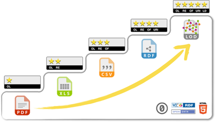

CONTENIDO
En un lugar de la mancha...Informar que estas citando algo. Dentro de parrafos con salto de linea
Esto es una cita...Citas cortas Esto es una cita te lo pone en cursiva Dentro de parrafos con salto de linea Preformatea el texto y detecta saltos entre parrafos
Con cien cañones por banda,
viento en popa a toda vela,
no corta el mar sino vuela,
un velero bergantín...
Declarar el css
- En linea Declarar estilo en linea
- Css incrustado. Se añade en el Head  - Solucion perfecta: Crear un fichero externo con todos los estilos.